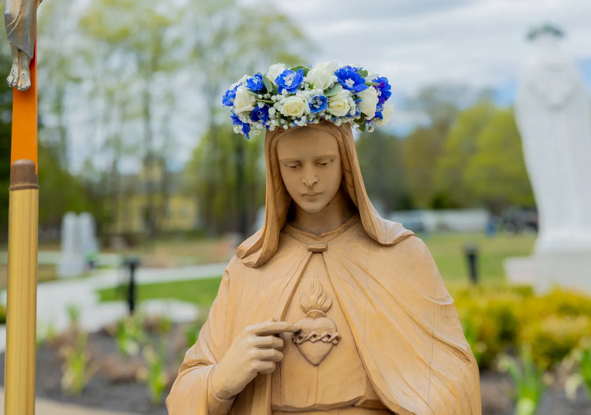
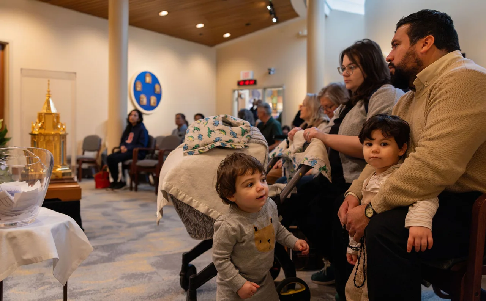
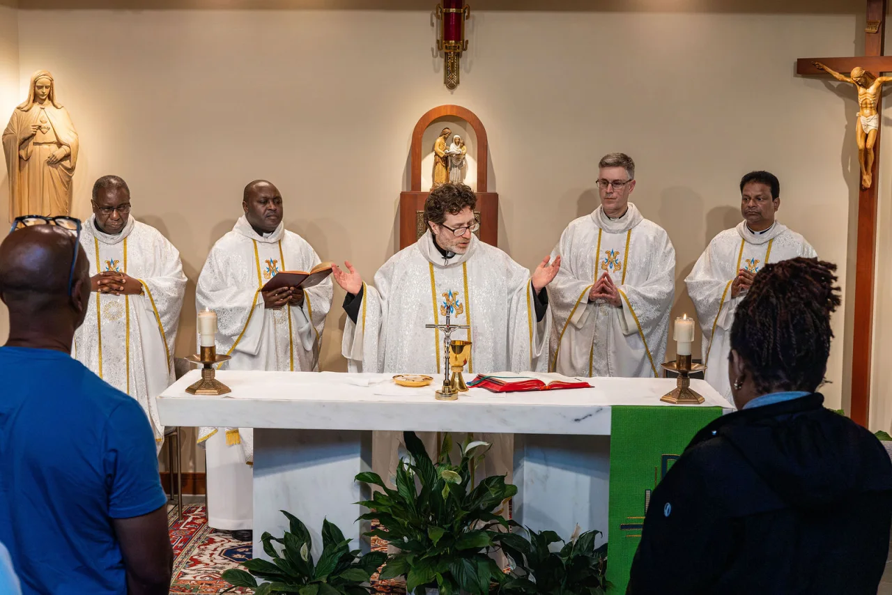
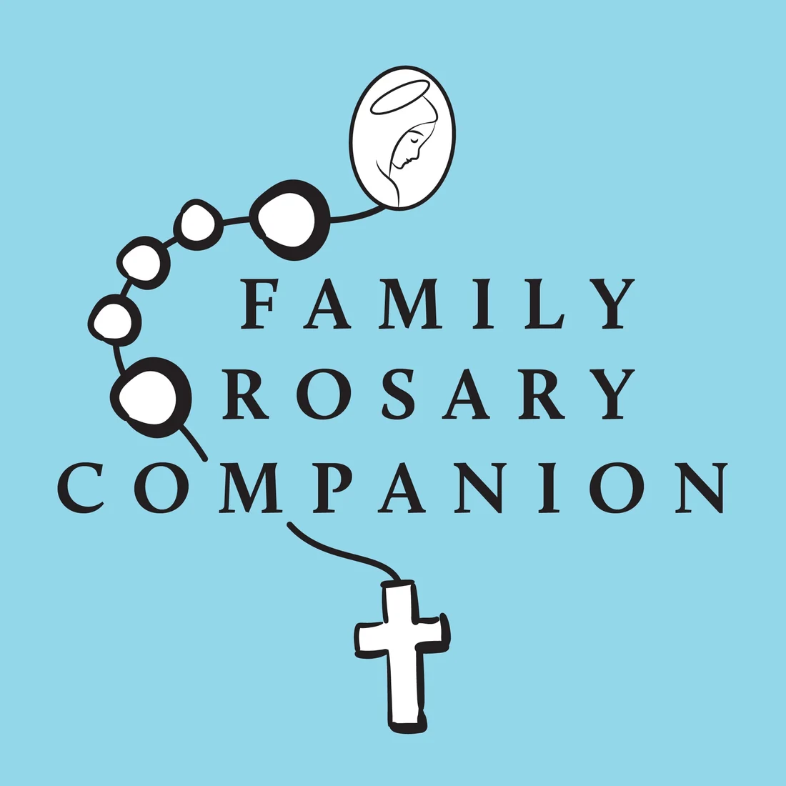
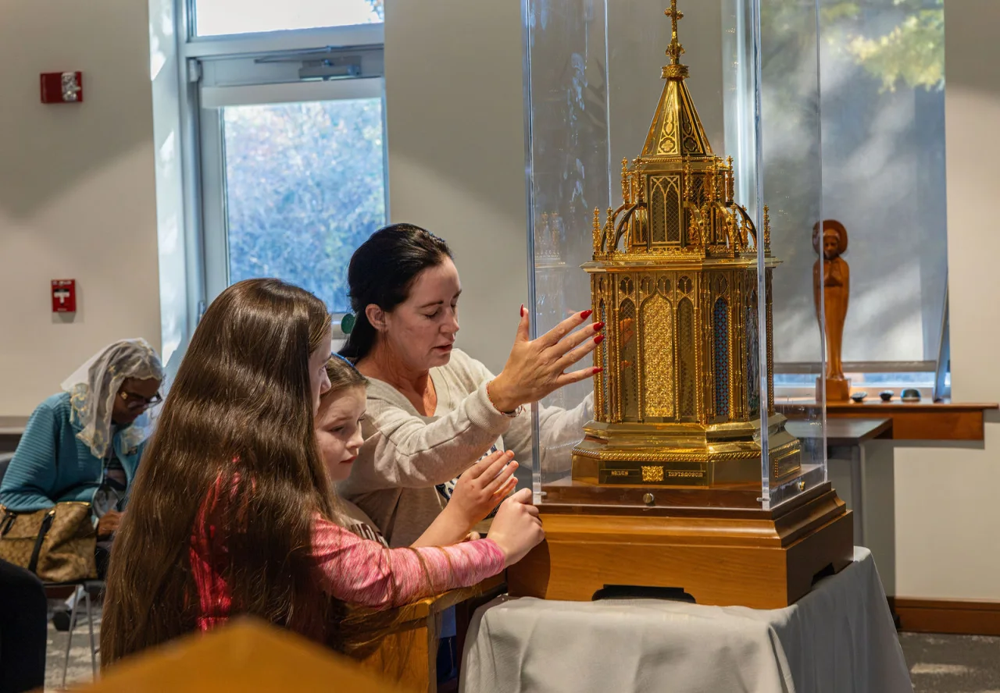
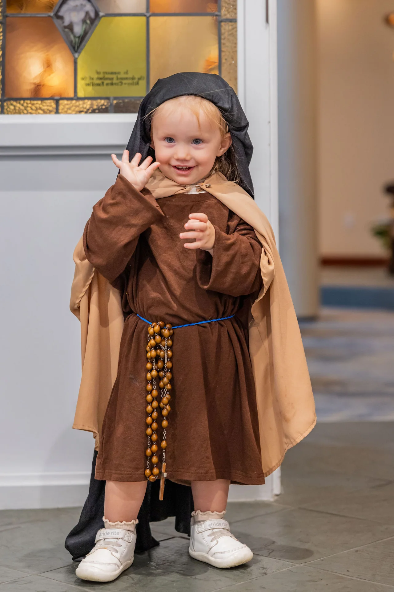
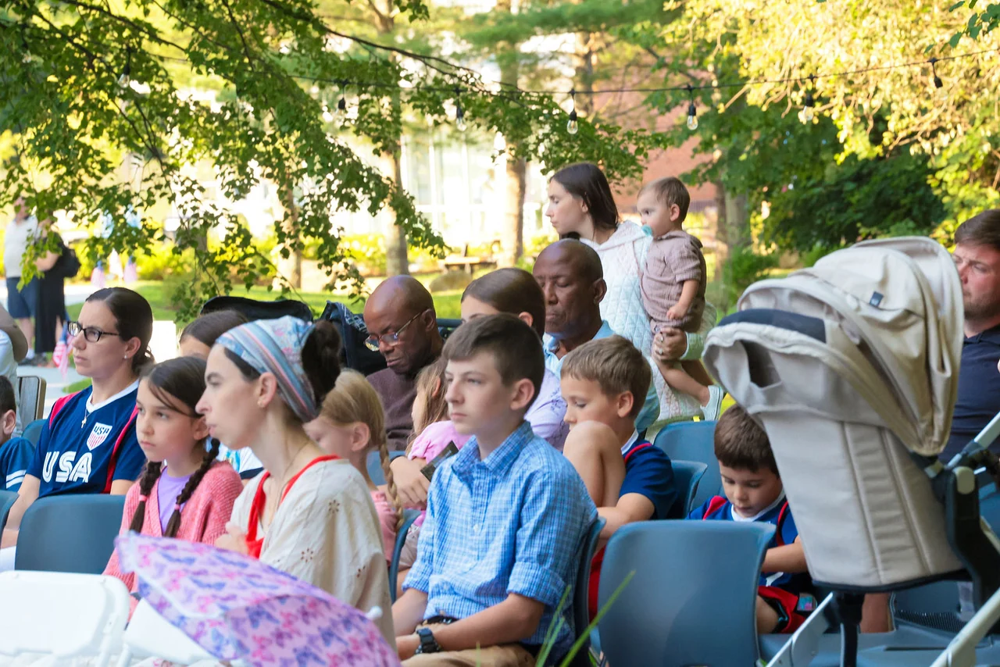
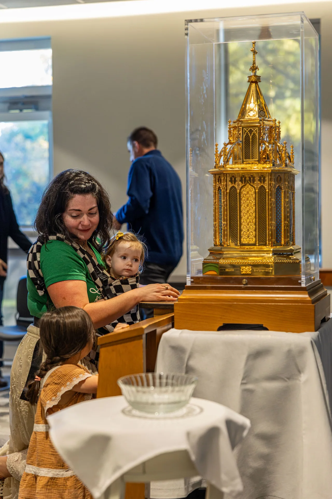

I misteri gaudiosi
With Father Patrick Peyton, C.S.C.
Make room for a moment of prayer. Follow Father Peyton through the Joyful Mysteries, with scenes from the life of Jesus and Mary.

A tavola o alla fine di una lunga giornata.Trova una preghiera da condividere, un Rosario da seguire e idee per coinvolgere i tuoi figli.

Dal Centro Padre Peyton. Dal lunedì al venerdì, ora della costa orientale degli Stati Uniti.
11:30 a.m.Rosario
MezzogiornoMessa
Un momento insieme con Dio.
Le preghiere, i passaggi e i misteri.
Una breve preghiera da seguire insieme.
Chiedi alla nostra comunità di pregare con te.
Scegliete qualcosa da fare insieme, ovunque siate.

Scopri le attività del ministero per la Messa in famiglia.

Leggi i passaggi e trova guide del Rosario da stampare.

Aiutali a scoprire il Rosario attraverso le immagini, condividi un’attività sul Vangelo della domenica o trova una preghiera che possano guidare.
Esplora la guida illustrata al Rosario in famiglia.
Trova attività da condividere sul Vangelo della domenica.
Segui l’interesse e l’attenzione di tuo figlio. Offri a tutti un modo semplice per partecipare.

Start wherever fits your family. With mixed ages, one person can name a mystery, another can lead a response, and others can point or listen. No download or materials are needed for these prayers.
Follow the beads, read the words and take your time. The interactive Rosary saves your place from the opening cross through all five decades.
The usual weekday pattern is a guide; you can pray any mystery.
Un grano. Una preghiera. Il tuo posto è memorizzato.
Prega oggi
Medita sulla Risurrezione e sulla speranza di una vita nuova.

A prayer to lead. An intention to share. A moment to listen. Help everyone in your family take part.
Choose a moment you already share. Let each person offer an intention. Give children a prayer to lead. Start with what you can do together, then keep growing.
Read an idea for ordinary family life, or spend a quiet moment with the mysteries.
Receive new blog reflections from Family Rosary. Choose daily notifications or a weekly digest when you sign up. Ricevi le riflessioni di Rosario in famiglia.
Find a gathering, or grow in the skills to serve other families. Dates and audiences are different for each program.
Registration, location and availability are confirmed on each ministry program page. Undated programs are ongoing series, not confirmed upcoming events.
«La famiglia che prega unita resta unita».
Venerable Patrick Peyton believed in the power of family prayer. Family Rosary continues that invitation through prayer, resources and ministry with families around the world.